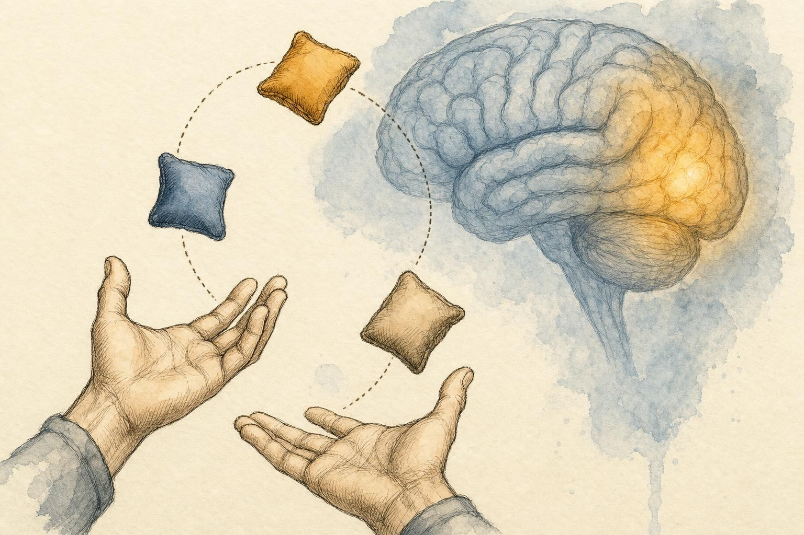
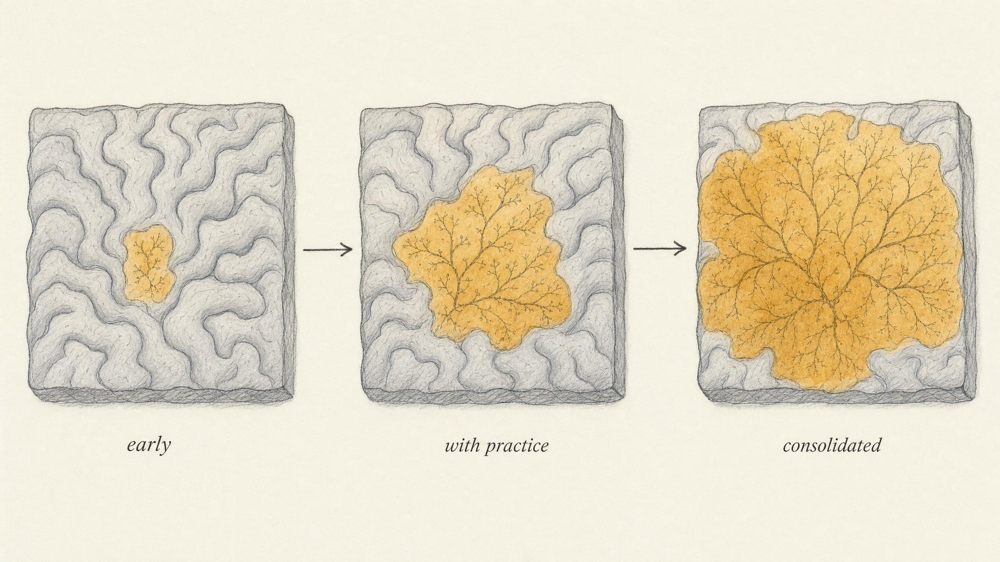

The Brain That Rewires Itself
How experience physically reshapes the nervous system, one strengthened synapse at a time.
In 2004, a team at the University of Regensburg took a group of adults who had never juggled and handed each of them three beanbags. The instruction was simple: learn to keep the beanbags in the air. Over three months the volunteers practiced, and before, during, and after, researchers scanned their brains. When the results came back, something quietly remarkable had happened. The brains had changed shape. A region tucked into the visual cortex, an area that tracks motion, had physically expanded in the jugglers and not in a matched group who never touched a beanbag. Then the researchers told the jugglers to stop practicing. Three months later they scanned again. The expansion had partly melted away (Draganski et al., 2004).
Read that sequence again, because it overturns the picture of the nervous system this course has been building. Learn a skill, and gray matter grows. Abandon the skill, and it recedes. The brain is not the fixed circuit board it has been treated as up to now. It is a living structure that remodels itself in response to what a person does, and what a person stops doing.
The Regensburg team had not stumbled onto a curiosity. Their design was careful precisely because the claim was so large: a matched, non-juggling comparison group was scanned on the same schedule and showed no such change, which is what let the researchers attribute the growth to the juggling itself rather than to age, time, or simply being scanned twice. Studies like this one are the reason the promise of plasticity is not folk wisdom or motivational poster material. Stroke survivors who recover movement are drawing on the same mechanism, as nearby, undamaged cortex gradually takes over functions once handled by injured tissue. People who lose their sight early in life and learn to read Braille are drawing on it too, as the visual cortex, deprived of its usual input, is recruited to help process fine touch. None of that is this chapter's clinical territory, but it is the same underlying biology this chapter is built to explain in its ordinary, everyday form.
Throughout this chapter you will follow one learner, Dmitri, a 54-year-old shipping-dock supervisor who decided, the week his youngest daughter left for college, to finally learn the violin he had abandoned at twelve. Dmitri is not a case study and not a patient. He is a stand-in for the ordinary confusion that surrounds learning as an adult, and his missteps are useful precisely because they are common ones. In his first month he practiced the way he assumed practice was supposed to work, in one long, exhausting session each Saturday, bow arm aching, fingertips sore, convinced that packing more hours into a single sitting would get him there fastest. A month later he could barely hold a tune, and he was ready to quit. He is not a case to be solved. He is a thread we will follow through the mechanics of plasticity, and by the end of the chapter his Saturday marathon sessions will look like exactly the mistake the science predicts.
The assumption we are about to overturn
Up to now, this course has leaned on a deliberately useful fiction. We described the neuron as a signaling unit in Chapter 2, the synapse as a junction where one cell speaks to the next in Chapter 3, the autonomic branches as patterned circuits in Chapter 5, the sensory cortex as a map of the body in Chapter 6, and motor learning as the refinement of movement commands in Chapter 7. In each case we implied a kind of permanence, as if the wiring were laid down once and simply used thereafter.
That fiction was scaffolding. It let us learn the parts before asking the harder question: where do the connections come from, and what keeps them the way they are? The answer is one of the most consequential ideas in modern neuroscience, and it is the thread that ties this entire course together. The nervous system is plastic, capable of structural and functional change throughout life. Neuroplasticity is not a special feature reserved for children or for recovery from injury. It is the ordinary, continuous mechanism behind every skill a learner has ever acquired, every habit ever formed, and every recovery ever made.
The word plastic here does not mean flimsy. It borrows an older sense, the one used in plastic arts, sculpture, of something that can be molded and then holds its new shape. That double meaning is exactly right. The nervous system is soft enough to be shaped by experience and stable enough to keep the shape until experience reshapes it again.
For much of the twentieth century, neuroscience taught something closer to the opposite. The dominant view held that the brain's wiring was essentially fixed after a childhood critical period, and that adult neurons could die but not meaningfully rewire. That view has not survived contact with the evidence. The jugglers in Regensburg were adults, most well into their twenties and thirties, and their motion-tracking cortex still expanded after three months of practice. Adult plasticity is smaller in some respects than the plasticity of a developing brain, and it is not equally easy in every circuit, but the doors it opens do not close at some fixed age and lock.
It is worth being precise about what changed in the field's thinking, because the correction matters as much as the original claim. Early and mid-century neuroscience was not wrong that childhood shows heightened plasticity in certain systems, language acquisition and basic visual wiring among them. It was wrong to generalize that heightened childhood plasticity into a rule that adult circuits were essentially static. The modern picture, the one this course adopts, is a spectrum rather than a switch: some circuits are more readily reshaped early in life, some retain a lifelong capacity for change, and the degree of plasticity available at any age depends heavily on the four conditions this chapter builds toward, attention, repetition, spacing, and sleep. A fixed brain would make the rest of this course, and the effort a learner puts into it, beside the point. A plastic one makes the effort the whole point.

Start at the synapse: fire together, wire together
To understand how a whole brain region can grow, return to the smallest unit of change, the synapse introduced in Chapter 3. Recall the basic transaction. A presynaptic neuron releases neurotransmitter, which binds receptors on a postsynaptic neuron, nudging it toward or away from firing. What that earlier chapter did not stress is that this junction is not a fixed valve. Its strength is adjustable. The same presynaptic spike can produce a large postsynaptic response or a small one, depending on the recent history of the connection.
The organizing principle was articulated by the psychologist Donald Hebb in 1949, and it is usually compressed into a slogan: cells that fire together, wire together. The fuller version carries more precision. Hebb proposed that when one neuron repeatedly and persistently takes part in firing another, some growth process or metabolic change strengthens the connection between them. The causal ordering matters, since neuron A helps cause neuron B to fire, but the memorable phrase captures the essence: co-active neurons build stronger links.
The mirror image principle is just as important and often forgotten: connections that are not used tend to weaken. Kleim and Jones (2008), reviewing the empirical principles of plasticity, place two of them side by side, use it or lose it and use it and improve it. A synapse is not neutral about neglect. Idle connections are pruned, active ones are reinforced. Plasticity is therefore always a two-way process of strengthening and weakening, and any honest model has to hold both.
From a slogan to a laboratory finding
Hebb's idea was a theory in 1949. The physiological demonstration came in 1973, when Timothy Bliss and Terje Lomo published one of the most cited findings in neuroscience. Working in the hippocampus of anaesthetized rabbits, they delivered a brief burst of high frequency stimulation to an input pathway and then measured how the receiving cells responded to ordinary test pulses afterward. The receiving synapses had become dramatically more responsive, and stayed that way. The enhancement lasted from thirty minutes to as long as ten hours (Bliss & Lomo, 1973).
They had discovered long-term potentiation (LTP): a persistent, use-dependent increase in synaptic strength produced by intense co-activation. We will keep LTP conceptual rather than biochemical here, since a learner does not need the molecular cascade to grasp the working model. What matters is the shape of the phenomenon. Fire a pathway hard enough, and the synapses along it become more efficient at the same task, and the change outlasts the stimulation by hours. Repeat the experience and the change can last far longer. Here, at last, was physical evidence for Hebb: repeated use does not merely employ a synapse, it modifies it.
Why does this matter for memory and skill? Because if experience can leave a persistent trace in the efficiency of a connection, then the pattern of a person's experiences can be written into the pattern of their synapses. Abraham and colleagues (2019), reviewing decades of work, describe LTP as the most studied and most memory-linked form of synaptic plasticity in the mammalian brain, the leading candidate for the cellular substrate of long-term memory. The slogan and the finding converge: the things a person does repeatedly become physically easier to do because the synapses that carry them have been potentiated.
LTP has a mirror-image partner worth naming, because the use it or lose it side of Hebb's principle needs a physical mechanism too, not just a slogan. Researchers call it long-term depression, a persistent weakening of a synapse produced by patterns of activity that are low frequency, poorly timed, or simply absent while a competing pathway is active. We will not dwell on its cellular details any more than we dwelt on the details of LTP; the conceptual point is what matters. Strengthening and weakening are two settings on the same dial, not two separate systems, and a synapse is being nudged one way or the other essentially all the time. A connection that goes unused is not preserved in a neutral, dormant state, waiting patiently to be called on again. It is actively allowed to fade, its resources reallocated to whatever the nervous system is actually doing. This is the physical basis of forgetting a language you no longer speak or losing the fine touch you once had at a job you left, and it is the same mechanism, run in reverse, that lets an unwanted habit eventually loosen its grip.
This is the mechanism sitting underneath Dmitri's aching Saturday bow arm, whether he knew it or not. Every time he drew the bow across the strings and his fingers landed roughly in the right position, a set of co-activated neurons in his motor and somatosensory cortex fired together. Some of those connections were being potentiated with each repetition. The trouble, as the next two sections will show, was not that his synapses were failing to respond. It was that a single exhausting weekly session is a strange way to ask a slow, structural process to do its best work.
Scaling up: from synapses to cortical maps
A single strengthened synapse is invisible to a brain scanner. So how did juggling produce a change large enough to see on magnetic resonance imaging (MRI)? The answer is that plasticity does not stop at the individual junction. When many synapses in a region are repeatedly co-activated by the same experience, the region as a whole reorganizes, and those changes aggregate into measurable shifts in cortical maps.
What Draganski and colleagues actually measured was regional gray matter volume, estimated from the scan and compared across time points within the same brains. A single synapse gaining strength does not move that needle by itself; what does is the combined effect of new dendritic branches, additional synaptic contacts, and possibly the recruitment of supporting glial cells, all clustered in the region doing the most work. Scale is the key word. One Hebbian event is a rounding error. Millions of correlated Hebbian events, repeated daily for months in the same population of neurons, become visible on an imaging scan. The jump from an invisible synapse to a measurable brain region is not a change in kind, it is a change in how many times the same basic event has happened in the same place.
Recall the sensory and motor maps from Chapters 6 and 7: the cortex contains orderly representations of the body, with more territory devoted to parts that demand fine control, the fingers, the lips. The crucial revision this chapter adds is that these maps are not fixed at birth. Their borders move with use. A body part or a skill that is exercised intensely claims more cortical territory; one that falls into disuse cedes territory to its neighbors. The map is a negotiated settlement, constantly renegotiated by experience.
The clearest human demonstration of a moving map comes from musicians. Elbert and colleagues (1995) used magnetic source imaging to compare the cortical representation of the fingers in string players against non-players. The cortical territory devoted to the fingers of the left hand, the hand that presses the strings rather than draws the bow, was measurably larger in the musicians. The effect was smallest for the thumb, which does less of the fine fretting work, and it did not appear on the right hand at all, the hand that simply holds the bow. Most tellingly, the amount of reorganization correlated with the age at which a musician had started playing: the earlier the start, the larger the shift, though the effect was present in people who began as adults too. This is Dmitri's violin project, quantified. If he keeps practicing, the map of his left hand fingers in his own somatosensory cortex will, in principle, begin to claim more territory, much as it did for the players Elbert and colleagues measured.
The structural machinery for this was documented in exquisite detail by Holtmaat and Svoboda (2009), who used repeated imaging of living cortex to watch synapses come and go. In the adult mammalian brain, they found, dendritic spines and axonal boutons, the physical points of synaptic contact, are continuously formed and eliminated. Experience biases this turnover: sensory input causes new synapses to appear where activity is high and existing ones to vanish where it is low. This is not a metaphor for rewiring. Connections literally materialize and disappear, giving the cortex a physical substrate for redrawing its maps.
It helps to picture what a map actually is at this level, because the word map can suggest something drawn once and filed away. A cortical map is closer to a crowd of neighbors than to a printed chart. Each patch of cortex is staffed by neurons whose job, loosely speaking, is to respond to a particular finger, a particular patch of skin, a particular movement. Neighboring patches compete for the same limited territory and the same limited blood supply and metabolic resources, the way neighboring shops compete for foot traffic on the same street. A finger that is used constantly, pressing strings, reading Braille, typing, sends a heavy and reliable stream of co-activated input into its patch of cortex, and through the Hebbian mechanism already described, the synapses serving that finger are potentiated while the boundary neurons that could have served a neighboring, less-used finger are gradually recruited across the border. A finger that goes unused, in a cast for months or simply never called upon for fine work, cedes ground the same way. The map is not redrawn by some central planner. It emerges from thousands of small, local, Hebbian competitions playing out at once.

When the map actually moves: the timing of change
A learner might assume the map expands the moment practice begins. It does not, and the exception is instructive. Kleim and colleagues (2004) trained adult rats on a demanding reaching task and asked precisely when the motor cortex reorganized. During the early phase of learning, the fast, dramatic phase where performance leaps forward, they found little map change. The reorganization and the growth of new synapses, a process called synaptogenesis, appeared during the late phase, after the fast gains had plateaued, as the skill was being consolidated into something durable.
This is a subtle but important lesson for any learner. The visible improvement in the first few sessions is largely the brain getting more efficient with connections it already has. The physical, structural rewriting, the part that makes a skill stick, happens later and more slowly, during continued practice and, as the next section will show, during sleep. The frustrating plateau where progress seems to stall may be exactly when the map is being redrawn underneath the surface.
Dmitri hit that plateau in week three. His fingers had learned roughly where the notes were, the fast early gains the reaching-task rats also showed, and then progress seemed to stop entirely. He nearly quit, reading the plateau as proof he lacked any talent for music. What the animal work suggests instead is that week three was likely exactly when the slower, structural rewriting his violin fingering needed was getting underway, invisible to him because it does not feel like the dramatic early gains do.
Neural plasticity is thought to be the basis for both learning in the intact brain and relearning in the damaged brain.
Kleim & Jones, 2008
The conditions that favor plasticity
If experience rewires the nervous system, then not all experience is equal. Plasticity is selective and demanding. Kleim and Jones (2008) distilled ten empirically derived principles from the rehabilitation literature, and four of them form a useful working model for a learner's own practice. Think of these as the levers that determine whether an experience leaves a durable trace or washes away.
Attention makes activity count
The nervous system does not reinforce everything that happens to it. It reinforces what it attends to. Passive exposure produces far weaker plasticity than engaged, focused practice. This is the principle Kleim and Jones call salience: the experience has to matter to the learner. In practical terms, twenty distracted minutes of practicing scales while watching a screen changes the motor cortex far less than five attentive minutes without distraction. Attention is the gate that decides which co-activations get to count as firing together. Dmitri's Saturday sessions were, in fact, reasonably focused; his mistake was not attention. It was what came next.
Salience also explains why a task that carries real stakes tends to leave a deeper trace than an identical task performed for no particular reason. A learner rehearsing a phrase they will actually need to say in an unfamiliar language tomorrow tends to encode it more durably than the same phrase copied out as an abstract exercise. The nervous system appears to weight experience partly by consequence, not just by repetition count, which is a reminder that motivation is not a soft, separate topic from plasticity. It is one of the levers that turns the mechanism on.
Repetition and intensity
Long-term potentiation required a burst of high frequency stimulation, not a single pulse, and the same holds at the behavioral scale. Plasticity is driven by repetition: connections strengthen with repeated activation, and durable maps require enough total practice to trigger the late-phase structural changes Kleim and colleagues documented. A skill practiced ten times will not claim the territory of a skill practiced ten thousand times. Intensity, the concentration of practice within a session, matters too, though as the next principle shows, it interacts strongly with how that practice is distributed in time.
Kleim and Jones (2008) add a related principle worth naming here: specificity. The nature of the training experience shapes the nature of the plasticity it produces. Practicing scales builds the specific circuits for playing scales; it does not automatically transfer into sight-reading a new piece or improvising, even though all three involve a violin. This is a useful corrective for any learner tempted to treat practice as a generic substance, more of which always helps everything equally. The map grows in the shape of what was actually rehearsed, not in the shape of what a learner hoped the practice would generalize into.
Spacing: why cramming fails
Here is where intuition betrays most learners, Dmitri included. It feels efficient to practice a skill in one long block, to get it done. But distributed practice, in which the same total amount is spread across days, produces stronger and more durable learning than massed practice crammed into a single session. The spacing effect is one of the most robust findings in the science of learning. The reason connects directly to the timing principle from the previous section: the structural, consolidating changes that redraw the map unfold over hours and days. Spacing gives those slow processes room to run between sessions. Cramming outruns the biology, asking days of consolidation to happen inside a single afternoon.
There is also a fatigue cost to massed practice that is easy to underrate. Long, unbroken sessions run into declining attention well before they run out of time, which means the back half of a marathon session is often lower-salience practice, the very thing the attention principle warns against. A learner grinding through hour three of an exhausting session is frequently paying full time cost for a fraction of the encoding benefit. Spacing sidesteps this by ending each session while attention is still genuinely engaged.
Sleep: the price of plasticity
The fourth condition is the one this course will devote its next chapter to, so it is introduced only in outline here. Sleep is not downtime. It is an active phase of neural remodeling. Tononi and Cirelli (2014) proposed the influential synaptic homeostasis hypothesis: during waking, learning drives a broad net strengthening of synapses across the cortex, so a person accumulates plastic change all day. But unchecked strengthening is unsustainable. It saturates circuits, blurs the signal, and costs enormous energy. During sleep, the brain renormalizes, selectively downscaling synaptic strength, restoring balance, sharpening the signal to noise ratio, and locking in the important changes. Sleep, in their memorable framing, is the price the brain pays for plasticity. Practice loads the changes; sleep consolidates them.
It is worth underlining how counterintuitive this is, because most learners, Dmitri among them, treat sleep as time subtracted from practice rather than as a continuation of it. Staying up later to fit in one more repetition feels like it should help. The synaptic homeostasis hypothesis suggests the opposite trade may be more common: a session cut short in favor of a full night's sleep can leave more of the day's gains intact a week later than a longer session followed by a shortened night. Sleep is not the reward for practice. In this account, it is part of the practice, the phase where the day's tentative, energetically expensive strengthening gets sorted, kept, or discarded.
Once Dmitri restructured his practice, twenty minutes each evening instead of four hours on Saturday, protected his sleep, and kept his attention on the music rather than the television playing in the next room, his plateau broke within two weeks. Nothing about his underlying talent had changed. He had simply stopped fighting his own consolidation process.
The shadow side: plasticity is not a synonym for improvement
Everything said so far frames plasticity as good news, the biology of growth, skill, and recovery. But the same mechanism is indifferent to whether what it strengthens is helpful. The nervous system wires in whatever fires together repeatedly, including patterns a learner would rather not keep. Plasticity is a double edged capacity, and a working model that ignores the second edge is incomplete.
Habits: automaticity is wired-in plasticity
A habit is, mechanically, a well potentiated pathway. The reason a habit feels effortless, the reason a hand reaches for a phone before a person has decided to, is that repetition has strengthened the relevant connections until the behavior runs with minimal deliberate input. This is the same LTP-flavored process that makes a musical passage automatic; the neutrality of the mechanism is precisely the problem. Cells that fire together, wire together does not check whether the wiring serves the learner. Unhelpful habits are not failures of willpower so much as successful, durable plasticity applied to a pattern a person would prefer to weaken.
The reassuring corollary is the use it or lose it principle in reverse. Because unused connections weaken, a habit can in principle be allowed to fade by starving the pathway of activation while repeatedly strengthening a competing one, building a new, stronger route rather than trying to erase the old. This is slow, and it is exactly why breaking a habit is hard: it asks a heavily potentiated circuit to yield territory to a barely formed rival.
Dmitri had his own example of this, unrelated to the violin. Years of warehouse shift work had wired in a habit of reaching for a second and third cup of coffee after four in the afternoon to push through the shift's slow stretch, a pattern so well potentiated he barely noticed doing it. Recognizing it as a strengthened pathway rather than a character flaw changed how he approached it. Instead of trying to will the habit away in one attempt, he built a competing routine, a short walk at the same hour, and let the old pathway weaken from disuse while the new one strengthened from repetition. Notice, too, how directly the four conditions from the previous section apply here even though the goal is subtraction rather than addition: the competing walk needed his attention rather than being done on autopilot, it needed to be repeated consistently, it needed to be spread across weeks rather than attempted once, and it needed enough sleep behind it for the new routine to actually consolidate. The same four levers that build a skill are the ones that unseat a habit.
Stress and the shaping of vulnerable circuits
Chapter 5 introduced the stress response as an adaptive autonomic pattern. Plasticity adds a warning to that story. Kim and Diamond (2002) reviewed how stress alters the hippocampus, a structure central to memory and to the long-term potentiation work this chapter began with. Under sustained stress, acting through glucocorticoids and the hypothalamic-pituitary-adrenal (HPA) axis, the very plasticity that supports learning is compromised: long-term potentiation is impaired, its weakening counterpart is facilitated, and prolonged stress produces measurable structural changes and deficits on memory tasks. Two things follow. First, chronic stress is not just an unpleasant state; it degrades the machinery of learning itself. Second, because stress responses are patterns of activation, they too can be strengthened by repetition; a nervous system that rehearses threat can become more efficient at producing threat. The capacity that lets a person grow can also entrench the patterns they most want to escape.
It is worth being explicit about why this belongs in the same chapter as violin practice and juggling. The mechanism Kim and Diamond describe is not a separate, exotic process bolted onto the Hebbian story. It is the same story, applied to a circuit that happens to be tracking threat rather than a bow arm. A stressor that recurs night after night, an argument replayed, a looming deadline rehearsed in the mind at 2 a.m., is a form of repetition, and repetition is precisely what this chapter has spent its length showing the nervous system responds to. The unsettling implication is that a person can, without any intention to do so, practice their own anxiety with the same fidelity Dmitri brought to his scales. Recognizing that pattern for what it is, an ordinary application of an ordinary mechanism, is itself useful, because it reframes a seemingly mysterious struggle as something with an identifiable, if not simple, cause.
None of this is a clinical claim, and this chapter is not a treatment protocol. It is a working model for understanding how experience shapes the nervous system. But the model has a clear implication: the conditions a learner places themselves in, repeatedly and attentively, are shaping their nervous system whether or not they intend them to. Plasticity is always on.
Reframing the whole course
Step back and notice what this chapter has done to everything before it. The neuron of Chapter 2 is not a fixed component but a cell that grows and retracts its connections. The synapse of Chapter 3 is not a fixed valve but an adjustable, history dependent junction. The autonomic patterns of Chapter 5 are not hardwired reflexes but rehearsable circuits. The sensory maps of Chapter 6 and the motor skills of Chapter 7 are negotiated territories whose borders move with practice. Plasticity is the property that unifies them all: the nervous system is, from the synapse to the cortical map, sculptable by experience.
That reframing carries both a responsibility and a promise. The promise is that improvement is genuinely possible. A learner is not stuck with the nervous system they have today, because attentive, repeated, well spaced, well slept experience physically changes it. The responsibility is that the changes accrue whether a person directs them or not. Understanding the mechanism does not make a learner its master, but it does let them tilt the odds: attend on purpose, repeat what matters, space it out, and protect sleep.
Treat those four levers as a working model rather than a formula, because that is what the evidence actually supports. None of the studies in this chapter promise a specific number of hours or a guaranteed timeline; a rat's reaching task, a juggler's three months, and a string player's years of training all reorganized cortex at their own pace, under their own conditions. What the studies converge on is direction, not schedule. Practice that is attended to, repeated, spread out, and followed by sleep reliably outperforms practice that is not, across an enormous range of skills and circuits. That is a modest claim by the standards of a marketing pitch and a remarkably durable one by the standards of neuroscience, which is exactly the trade a careful learner should want.
Dmitri played a simple folk tune for his daughter over a video call four months after he started, badly in places, correctly in most. He had not discovered a shortcut around plasticity. He had simply stopped working against it.
Key Takeaways
- The nervous system is not fixed wiring. Neuroplasticity, experience-dependent structural and functional change, operates throughout life and underlies all learning, habit, and recovery.
- Change begins at the synapse. Hebb's principle, cells that fire together wire together, means co-active connections strengthen while unused ones weaken. Bliss and Lomo's (1973) discovery of long-term potentiation (LTP) gave this a physiological demonstration.
- Synaptic changes aggregate into shifts in cortical maps: practiced skills claim more territory, as shown directly in string players (Elbert et al., 1995), and structural rewiring occurs during the later, consolidating phase of learning (Kleim et al., 2004; Draganski et al., 2004).
- Plasticity is favored by four conditions: attention (salience), repetition, spacing over time, and sleep (Kleim & Jones, 2008; Tononi & Cirelli, 2014).
- Plasticity is double edged: the same mechanism that builds skills also wires in unhelpful habits and, under chronic stress, can degrade the learning machinery itself (Kim & Diamond, 2002).
- This is a working model for understanding your own learning, not a clinical or therapeutic protocol.
We ended on a promissory note: the plastic changes accumulated during the day are not yet permanent. In Chapter 9 we follow those changes into the night. Sleep, far from being idle, is when the brain pays the price of plasticity, consolidating the day's learning, renormalizing overgrown synapses, and locking in the maps you spent the day redrawing. If plasticity is the writing, sleep is the saving.
References
Abraham, W. C., Jones, O. D., & Glanzman, D. L. (2019). Is plasticity of synapses the mechanism of long-term memory storage? npj Science of Learning, 4(1), 9. https://doi.org/10.1038/s41539-019-0048-y
Bliss, T. V. P., & Lomo, T. (1973). Long-lasting potentiation of synaptic transmission in the dentate area of the anaesthetized rabbit following stimulation of the perforant path. The Journal of Physiology, 232(2), 331 to 356. https://doi.org/10.1113/jphysiol.1973.sp010273
Draganski, B., Gaser, C., Busch, V., Schuierer, G., Bogdahn, U., & May, A. (2004). Changes in grey matter induced by training. Nature, 427(6972), 311 to 312. https://doi.org/10.1038/427311a
Elbert, T., Pantev, C., Wienbruch, C., Rockstroh, B., & Taub, E. (1995). Increased cortical representation of the fingers of the left hand in string players. Science, 270(5234), 305 to 307. https://doi.org/10.1126/science.270.5234.305
Holtmaat, A., & Svoboda, K. (2009). Experience-dependent structural synaptic plasticity in the mammalian brain. Nature Reviews Neuroscience, 10(9), 647 to 658. https://doi.org/10.1038/nrn2699
Kim, J. J., & Diamond, D. M. (2002). The stressed hippocampus, synaptic plasticity and lost memories. Nature Reviews Neuroscience, 3(6), 453 to 462. https://doi.org/10.1038/nrn849
Kleim, J. A., Hogg, T. M., VandenBerg, P. M., Cooper, N. R., Bruneau, R., & Remple, M. (2004). Cortical synaptogenesis and motor map reorganization occur during late, but not early, phase of motor skill learning. The Journal of Neuroscience, 24(3), 628 to 633. https://doi.org/10.1523/JNEUROSCI.3440-03.2004
Kleim, J. A., & Jones, T. A. (2008). Principles of experience-dependent neural plasticity: Implications for rehabilitation after brain damage. Journal of Speech, Language, and Hearing Research, 51(1), S225 to S239. https://doi.org/10.1044/1092-4388(2008/018)
Tononi, G., & Cirelli, C. (2014). Sleep and the price of plasticity: From synaptic and cellular homeostasis to memory consolidation and integration. Neuron, 81(1), 12 to 34. https://doi.org/10.1016/j.neuron.2013.12.025